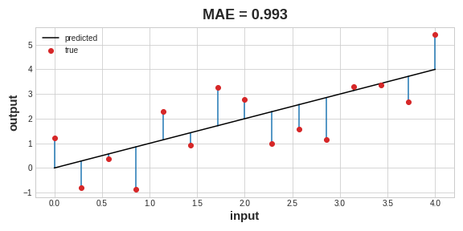
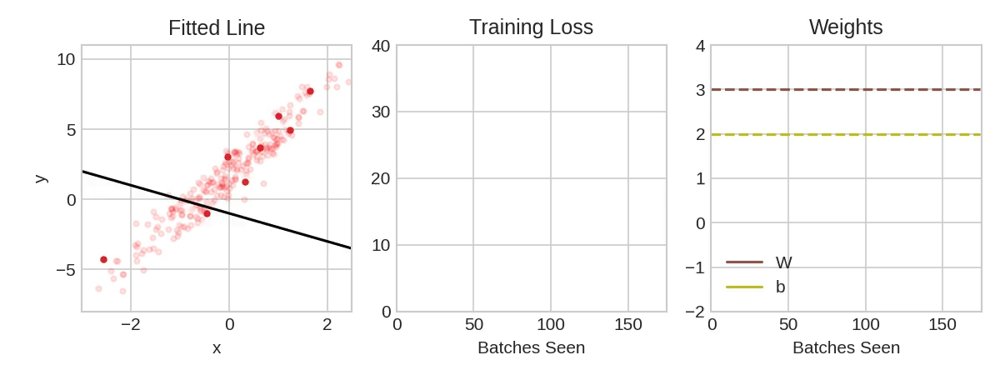
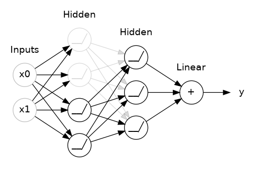
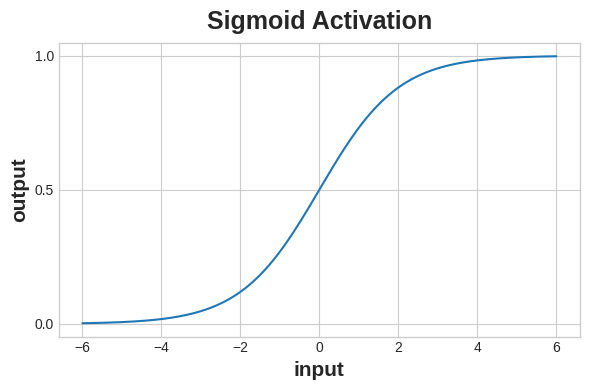

kaggle Intro to Deep Learning
A Single Neuron
Using Keras and Tensorflow you’ll learn how to:
- create a fully-connected neural network architecture
- apply neural nets to two classic ML problems: regression and classification
- train neural nets with stochastic gradient descent, and
- improve performance with dropout, batch normalization, and other techniques
What is Deep Learning?
Deep learning is an approach to machine learning characterized by deep stacks of computations. This depth of computation is what has enabled deep learning models to disentangle the kinds of complex and hierarchical patterns found in the most challenging real-world datasets.
Through their power and scalability neural networks have become the defining model of deep learning. Neural networks are composed of neurons, where each neuron individually performs only a simple computation. The power of a neural network comes instead from the complexity of the connections these neurons can form.
The linear unit
As a diagram, a neuron (or unit) with one input looks like:

The input is x. Its connection to the neuron has a weight which is w. Whenever a value flows through a connection, you multiply the value by the connection’s weight. For the input x, what reaches the neuron is w * x. A neural network “learns” by modifying its weights.
The b is a special kind of weight we call the bias. The bias doesn’t have any input data associated with it; instead, we put a 1 in the diagram so that the value that reaches the neuron is just b (since 1 * b = b). The bias enables the neuron to modify the output independently of its inputs.
The y is the value the neuron ultimately outputs. To get the output, the neuron sums up all the values it receives through its connections. This neuron’s activation is y = w * x + b, or as a formula \(y=wx+b\).
Though individual neurons will usually only function as part of a larger network, it’s often useful to start with a single neuron model as a baseline. Single neuron models are linear models.

Multiple inputs
We can just add more input connections to the neuron, one for each additional feature. To find the output, we would multiply each input to its connection weight and then add them all together.

The formula for this neuron would be \(y=w_{0}x_{0}+w_{1}x_{1}+w_{2}x_{2}+b\). A linear unit with two inputs will fit a plane, and a unit with more inputs than that will fit a hyperplane.
Linear units in Keras
The easiest way to create a model in Keras is through keras.Sequential, which creates a neural network as a stack of layers. We can create models like those above using a dense layer (which we’ll learn more about in the next lesson).
We could define a linear model accepting three input features ('sugars', 'fiber', and 'protein') and producing a single output ('calories') like so:
With the first argument, units, we define how many outputs we want. In this case we are just predicting 'calories', so we’ll use units=1.
With the second argument, input_shape, we tell Keras the dimensions of the inputs. Setting input_shape=[3] ensures the model will accept three features as input ('sugars', 'fiber', and 'protein').
Why is input_shape a Python list? The data we’ll use in this course will be tabular data, like in a Pandas dataframe. We’ll have one input for each feature in the dataset. The features are arranged by column, so we’ll always have input_shape=[num_columns]. The reason Keras uses a list here is to permit use of more complex datasets. Image data, for instance, might need three dimensions: [height, width, channels].
Deep Neural Networks
In this lesson we’re going to see how we can build neural networks capable of learning the complex kinds of relationships deep neural nets are famous for.
The key idea here is modularity, building up a complex network from simpler functional units. We’ve seen how a linear unit computes a linear function – now we’ll see how to combine and modify these single units to model more complex relationships.
Layers
Neural networks typically organize their neurons into layers. When we collect together linear units having a common set of inputs we get a dense layer.

You could think of each layer in a neural network as performing some kind of relatively simple transformation. Through a deep stack of layers, a neural network can transform its inputs in more and more complex ways. In a well-trained neural network, each layer is a transformation getting us a little bit closer to a solution.
Many Kinds of Layers A “layer” in Keras is a very general kind of thing. A layer can be, essentially, any kind of data transformation. Many layers, like the convolutional and recurrent layers, transform data through use of neurons and differ primarily in the pattern of connections they form. Others though are used for feature engineering or just simple arithmetic. There’s a whole world of layers to discover – check them out!
The activation function
It turns out, however, that two dense layers with nothing in between are no better than a single dense layer by itself. Dense layers by themselves can never move us out of the world of lines and planes. What we need is something nonlinear. What we need are activation functions.
Without activation functions, neural networks can only learn linear relationships. In order to fit curves, we’ll need to use activation functions.
An activation function is simply some function we apply to each of a layer’s outputs (its activations). The most common is the rectifier function max(0,x)max(0,x).

The rectifier function has a graph that’s a line with the negative part “rectified” to zero. Applying the function to the outputs of a neuron will put a bend in the data, moving us away from simple lines.
When we attach the rectifier to a linear unit, we get a rectified linear unit or ReLU. (For this reason, it’s common to call the rectifier function the “ReLU function”.) Applying a ReLU activation to a linear unit means the output becomes max(0, w * x + b), which we might draw in a diagram like:

Stacking dense layers
Now that we have some nonlinearity, let’s see how we can stack layers to get complex data transformations.

The layers before the output layer are sometimes called hidden since we never see their outputs directly.
Now, notice that the final (output) layer is a linear unit (meaning, no activation function). That makes this network appropriate to a regression task, where we are trying to predict some arbitrary numeric value. Other tasks (like classification) might require an activation function on the output.
Building sequential models
Be sure to pass all the layers together in a list, like [layer, layer, layer, ...], instead of as separate arguments. To add an activation function to a layer, just give its name in the activation argument.
Stochastic Gradient Descent
As with all machine learning tasks, we begin with a set of training data. Each example in the training data consists of some features (the inputs) together with an expected target (the output). Training the network means adjusting its weights in such a way that it can transform the features into the target. In the 80 Cereals dataset, for instance, we want a network that can take each cereal’s 'sugar', 'fiber', and 'protein' content and produce a prediction for that cereal’s 'calories'. If we can successfully train a network to do that, its weights must represent in some way the relationship between those features and that target as expressed in the training data.
In addition to the training data, we need two more things:
- A “loss function” that measures how good the network’s predictions are.
- An “optimizer” that can tell the network how to change its weights.
The loss function
We’ve seen how to design an architecture for a network, but we haven’t seen how to tell a network what problem to solve. This is the job of the loss function.
The loss function measures the disparity between the the target’s true value and the value the model predicts.
Different problems call for different loss functions. We have been looking at regression problems, where the task is to predict some numerical value – calories in 80 Cereals, rating in Red Wine Quality. Other regression tasks might be predicting the price of a house or the fuel efficiency of a car.
A common loss function for regression problems is the mean absolute error or MAE. For each prediction y_pred, MAE measures the disparity from the true target y_true by an absolute difference abs(y_true - y_pred).
The total MAE loss on a dataset is the mean of all these absolute differences.

Besides MAE, other loss functions you might see for regression problems are the mean-squared error (MSE) or the Huber loss (both available in Keras).
During training, the model will use the loss function as a guide for finding the correct values of its weights (lower loss is better). In other words, the loss function tells the network its objective.
The optimizer - Stochastic gradient descent
We’ve described the problem we want the network to solve, but now we need to say how to solve it. This is the job of the optimizer. The optimizer is an algorithm that adjusts the weights to minimize the loss.
Virtually all of the optimization algorithms used in deep learning belong to a family called stochastic gradient descent. They are iterative algorithms that train a network in steps. One step of training goes like this:
- Sample some training data and run it through the network to make predictions.
- Measure the loss between the predictions and the true values.
- Finally, adjust the weights in a direction that makes the loss smaller.
Then just do this over and over until the loss is as small as you like (or until it won’t decrease any further.)

Each iteration’s sample of training data is called a minibatch (or often just “batch”), while a complete round of the training data is called an epoch. The number of epochs you train for is how many times the network will see each training example.
Learning rate and batch size
Notice that the line only makes a small shift in the direction of each batch (instead of moving all the way). The size of these shifts is determined by the learning rate. A smaller learning rate means the network needs to see more minibatches before its weights converge to their best values.
The learning rate and the size of the minibatches are the two parameters that have the largest effect on how the SGD training proceeds. Their interaction is often subtle and the right choice for these parameters isn’t always obvious.
Fortunately, for most work it won’t be necessary to do an extensive hyperparameter search to get satisfactory results. Adam is an SGD algorithm that has an adaptive learning rate that makes it suitable for most problems without any parameter tuning (it is “self tuning”, in a sense). Adam is a great general-purpose optimizer.
Adding the loss and optimizer
After defining a model, you can add a loss function and optimizer with the model’s compile method:
model.compile(
optimizer="adam",
loss="mae",
)Notice that we are able to specify the loss and optimizer with just a string. You can also access these directly through the Keras API – if you wanted to tune parameters, for instance – but for us, the defaults will work fine.
What’s In a Name? The gradient is a vector that tells us in what direction the weights need to go. More precisely, it tells us how to change the weights to make the loss change fastest. We call our process gradient descent because it uses the gradient to descend the loss curve towards a minimum. Stochastic means “determined by chance.” Our training is stochastic because the minibatches are random samples from the dataset. And that’s why it’s called SGD!
One thing you might note for now though is that we’ve rescaled each feature to lie in the interval [0,1][0,1]. As we’ll discuss more in Lesson 5, neural networks tend to perform best when their inputs are on a common scale.
Exercise
Overfitting and Underfitting
In this lesson, we’re going to learn how to interpret these learning curves and how we can use them to guide model development. In particular, we’ll examine at the learning curves for evidence of underfitting and overfitting and look at a couple of strategies for correcting it.
Interpreting the learning curves
You might think about the information in the training data as being of two kinds: signal and noise. The signal is the part that generalizes, the part that can help our model make predictions from new data. The noise is that part that is only true of the training data; the noise is all of the random fluctuation that comes from data in the real-world or all of the incidental, non-informative patterns that can’t actually help the model make predictions. The noise is the part might look useful but really isn’t.
We train a model by choosing weights or parameters that minimize the loss on a training set. You might know, however, that to accurately assess a model’s performance, we need to evaluate it on a new set of data, the validation data.
When we train a model we’ve been plotting the loss on the training set epoch by epoch. To this we’ll add a plot the validation data too. These plots we call the learning curves. To train deep learning models effectively, we need to be able to interpret them.

Now, the training loss will go down either when the model learns signal or when it learns noise. But the validation loss will go down only when the model learns signal. (Whatever noise the model learned from the training set won’t generalize to new data.) So, when a model learns signal both curves go down, but when it learns noise a gap is created in the curves. The size of the gap tells you how much noise the model has learned.
Ideally, we would create models that learn all of the signal and none of the noise. This will practically never happen. Instead we make a trade. We can get the model to learn more signal at the cost of learning more noise. So long as the trade is in our favor, the validation loss will continue to decrease. After a certain point, however, the trade can turn against us, the cost exceeds the benefit, and the validation loss begins to rise.

This trade-off indicates that there can be two problems that occur when training a model: not enough signal or too much noise. Underfitting the training set is when the loss is not as low as it could be because the model hasn’t learned enough signal. Overfitting the training set is when the loss is not as low as it could be because the model learned too much noise. The trick to training deep learning models is finding the best balance between the two.
Capacity
A model’s capacity refers to the size and complexity of the patterns it is able to learn. For neural networks, this will largely be determined by how many neurons it has and how they are connected together. If it appears that your network is underfitting the data, you should try increasing its capacity.
You can increase the capacity of a network either by making it wider (more units to existing layers) or by making it deeper (adding more layers). Wider networks have an easier time learning more linear relationships, while deeper networks prefer more nonlinear ones.
Early stopping
We mentioned that when a model is too eagerly learning noise, the validation loss may start to increase during training. To prevent this, we can simply stop the training whenever it seems the validation loss isn’t decreasing anymore. Interrupting the training this way is called early stopping.
Once we detect that the validation loss is starting to rise again, we can reset the weights back to where the minimum occured. This ensures that the model won’t continue to learn noise and overfit the data.
Training with early stopping also means we’re in less danger of stopping the training too early, before the network has finished learning signal. So besides preventing overfitting from training too long, early stopping can also prevent underfitting from not training long enough. Just set your training epochs to some large number (more than you’ll need), and early stopping will take care of the rest.
Adding early stopping
In Keras, we include early stopping in our training through a callback. A callback is just a function you want run every so often while the network trains. The early stopping callback will run after every epoch. (Keras has a variety of useful callbacks pre-defined, but you can define your own, too.)
Dropout and Batch Normalization
There’s more to the world of deep learning than just dense layers. There are dozens of kinds of layers you might add to a model. (Try browsing through the Keras docs for a sample!) Some are like dense layers and define connections between neurons, and others can do preprocessing or transformations of other sorts.
In this lesson, we’ll learn about a two kinds of special layers, not containing any neurons themselves, but that add some functionality that can sometimes benefit a model in various ways. Both are commonly used in modern architectures.
Dropout
The first of these is the “dropout layer”, which can help correct overfitting.
In the last lesson we talked about how overfitting is caused by the network learning spurious patterns in the training data. To recognize these spurious patterns a network will often rely on very a specific combinations of weight, a kind of “conspiracy” of weights. Being so specific, they tend to be fragile: remove one and the conspiracy falls apart.
This is the idea behind dropout. To break up these conspiracies, we randomly drop out some fraction of a layer’s input units every step of training, making it much harder for the network to learn those spurious patterns in the training data. Instead, it has to search for broad, general patterns, whose weight patterns tend to be more robust.

You could also think about dropout as creating a kind of ensemble of networks. The predictions will no longer be made by one big network, but instead by a committee of smaller networks. Individuals in the committee tend to make different kinds of mistakes, but be right at the same time, making the committee as a whole better than any individual. (If you’re familiar with random forests as an ensemble of decision trees, it’s the same idea.)
keras.Sequential([
# ...
layers.Dropout(rate=0.3), # apply 30% dropout to the next layer
layers.Dense(16),
# ...
])Batch normalization
The next special layer we’ll look at performs “batch normalization” (or “batchnorm”), which can help correct training that is slow or unstable.
With neural networks, it’s generally a good idea to put all of your data on a common scale, perhaps with something like scikit-learn’s StandardScaler or MinMaxScaler. The reason is that SGD will shift the network weights in proportion to how large an activation the data produces. Features that tend to produce activations of very different sizes can make for unstable training behavior.
Now, if it’s good to normalize the data before it goes into the network, maybe also normalizing inside the network would be better! In fact, we have a special kind of layer that can do this, the batch normalization layer. A batch normalization layer looks at each batch as it comes in, first normalizing the batch with its own mean and standard deviation, and then also putting the data on a new scale with two trainable rescaling parameters. Batchnorm, in effect, performs a kind of coordinated rescaling of its inputs.
Most often, batchnorm is added as an aid to the optimization process (though it can sometimes also help prediction performance). Models with batchnorm tend to need fewer epochs to complete training. Moreover, batchnorm can also fix various problems that can cause the training to get “stuck”. Consider adding batch normalization to your models, especially if you’re having trouble during training.
layers.Dense(16),
layers.BatchNormalization(),
layers.Activation('relu'),And if you add it as the first layer of your network it can act as a kind of adaptive preprocessor, standing in for something like Sci-Kit Learn’s StandardScaler.
Binary Classification
Now we’re going to apply neural networks to another common machine learning problem: classification.
Binary classification
Classification into one of two classes is a common machine learning problem. These are all binary classification problems.
Before using this data we’ll assign a class label: one class will be 0 and the other will be 1. Assigning numeric labels puts the data in a form a neural network can use.
Accuracy and cross-entropy
Accuracy is one of the many metrics in use for measuring success on a classification problem. Accuracy is the ratio of correct predictions to total predictions: accuracy = number_correct / total.
The problem with accuracy (and most other classification metrics) is that it can’t be used as a loss function. SGD needs a loss function that changes smoothly, but accuracy, being a ratio of counts, changes in “jumps”. So, we have to choose a substitute to act as the loss function. This substitute is the cross-entropy function.
Now, recall that the loss function defines the objective of the network during training. With regression, our goal was to minimize the distance between the expected outcome and the predicted outcome. We chose MAE to measure this distance.
For classification, what we want instead is a distance between probabilities, and this is what cross-entropy provides. Cross-entropy is a sort of measure for the distance from one probability distribution to another.
The technical reasons we use cross-entropy are a bit subtle, but the main thing to take away from this section is just this: use cross-entropy for a classification loss; other metrics you might care about (like accuracy) will tend to improve along with it.
Making probabilities with the Sigmoid function
The cross-entropy and accuracy functions both require probabilities as inputs, meaning, numbers from 0 to 1. To covert the real-valued outputs produced by a dense layer into probabilities, we attach a new kind of activation function, the sigmoid activation.

To get the final class prediction, we define a threshold probability. Typically this will be 0.5, so that rounding will give us the correct class: below 0.5 means the class with label 0 and 0.5 or above means the class with label 1. A 0.5 threshold is what Keras uses by default with its accuracy metric.